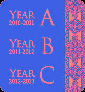

As a lector trainer at diocesan formation and parish leadership conferences, Audrey Sommers gives inspiration to lectors by providing them with speech dynamics & techniques that make their proclamations thought-provoking and meaningful to parishioners.
Ms. Sommers speaks at parishes and conferences nationally about the latest changes in the General Instruction of the Roman Missal (GIRM) that affect lectors. She addresses the role of the lector according to the Second Vatican Council on reading Sacred Scripture with dignity and reverence.
Lector training workshops are available with video recording of lectors making their proclamations and receiving critiques following the interactive workshop session.
